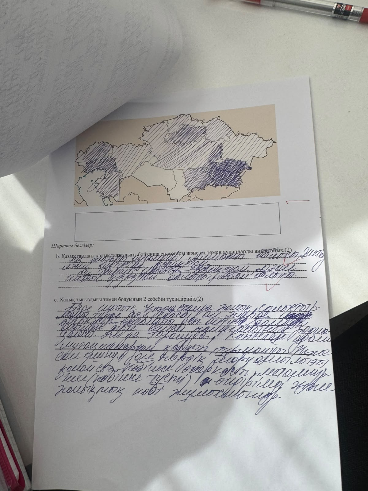
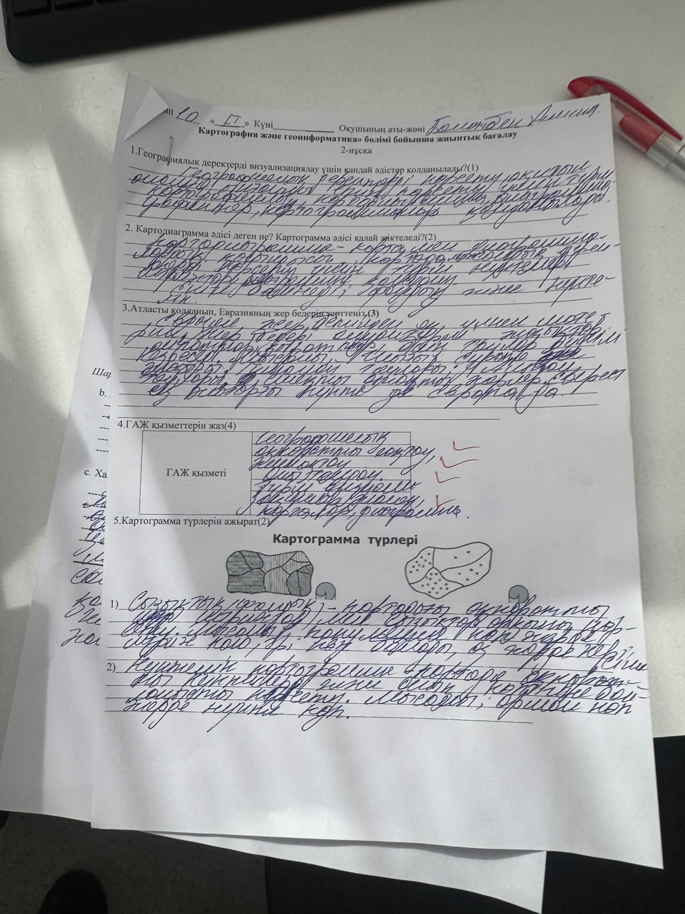
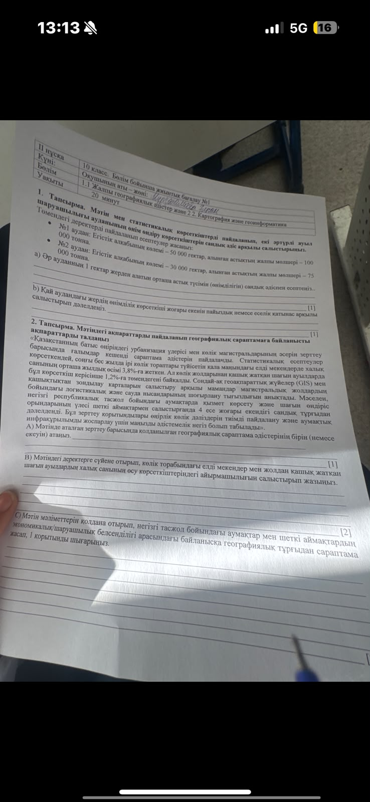
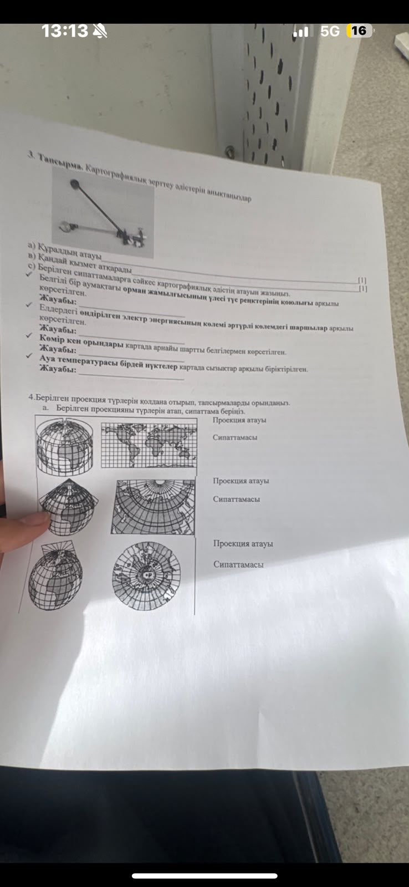

← На главнуюРазбор реальных БЖБ с фото
РАЗБОР РЕАЛЬНЫХ БЖБ (с фото): Картография и геоинформатика + плотность населения
Ответы на казахском (как сдавать), пояснения на русском. Формулы и шаблоны — учи их.
========================================
БЖБ №1, ЗАДАЧА 1. Урожайность (считай всегда так)
========================================
Формула: урожайность = валовой сбор / площадь. 1 тонна = 10 центнеров.
№1 аудан: 100 000 т / 50 000 га = 2 т/га = 20 ц/га.
№2 аудан: 75 000 т / 30 000 га = 2,5 т/га = 25 ц/га.
a) Жауабы: №1 — 20 ц/га, №2 — 25 ц/га.
b) №2 выше: 25 > 20 (на 5 ц/га, т.е. на 25% выше). Доказательство: 75/30 = 2,5 против 100/50 = 2. Можно долей: 2,5/2 = 1,25.
Шаблон: всегда переводи в ц/га (×10) и сравни делением.
========================================
БЖБ №1, ЗАДАЧА 2. Урбанизация + ГАЖ (текст)
========================================
A) Қолданылған әдіс: картодиаграмма (аудандар бойынша жиынтық көрсеткіш — өсім) + геоақпараттық (ГАЖ) талдау. Если просят один — пиши картодиаграмма; если два — добавь ГИС-анализ.
B) Үлкен жол бойындағы қалалар тез өседі (орташа 3,8%-дан жоғары), ал жолдан қашық шағын ауылдар — тек 1,2%. Сандарды салыстыр: 3,8 > 1,2 примерно в 3 раза.
C) Қорытынды шаблон: тасжол бойындағы аумақтарда экономикалық белсенділік жоғары (логистика, жұмыс, қызмет) → халық өседі; шеткі аймақтарда белсенділік төмен → өсім төмен. Географиялық байланыс: көлік инфрақұрылымы → экономика → халық.
Ключевые слова для баллов: магистраль, логистика, ГАЖ, салыстыру, қорытынды.
========================================
ЗАДАЧА 3. Прибор + сопоставления
========================================
a) Құрал атауы: полярлық планиметр (планиметр).
в) Қызметі: картадағы фигуралар ауданын өлшеу (площади, иногда длины).
c) Сәйкестендіру:
- Орман жамылғысы % бояу реңімен → фоновая картограмма (картограмма, фоновый тәсіл).
- Электр энергиясы әртүрлі көлемдегі шаршылар/дөңгелектер → картодиаграмма.
- Көмір орындары арнайы белгілермен → значковый тәсіл (белгілер әдісі).
- Температурасы бірдей нүктелер сызықпен → изолинии (изотермы).
Учи парами: % заливка = картограмма; кружки = картодиаграмма; значки = пункты; линии = изолинии.
========================================
ЗАДАЧА 4. Проекции (по картинкам)
========================================
1) Цилиндрическая (тік цилиндрлік): меридианы и параллели — прямые, перпендикулярны. Плюс: экватор без искажений. Минус: полюса растянуты. Для мира/экваториальных стран.
2) Коническая (конустық): параллели — дуги, меридианы — прямые, сходятся. Для средних широт (Евразия, Қазақстан).
3) Азимутальная полярная: вид с полюса; меридианы — прямые из центра, параллели — концентрические круги. Для полярных областей.
Шаблон описания: название → как выглядят сетка → где искажений меньше → для каких территорий.
========================================
2-НҰСҚА (второй лист)
========================================
1. Визуализация тәсілдері: өлшем (размер), түс (цвет), пішін (форма); графиктер, диаграммалар, картограммалар, картосхемалар.
2. Картодиаграмма = диаграмма + карта, жиынтық көрсеткіш (ХВП, халық саны); картограмма = бояу/штрих, салыстырмалы үлестірім (тығыздық, %). Разница: кружки-сумма vs заливка-распределение.
3. Еуразия бедері (по атласу, шаблон): жазықтар — Шығыс Еуропа, Батыс Сібір, Тұран; таулар — Альпі, Кавказ, Тянь-Шань, Гималай, Тибет; биік нүкте — Джомолунгма. Опиши: где горы (юг/восток/центр), где равнины (север/запад).
4. ГАЖ қызметтері: жинау, сақтау, өңдеу, талдау, беру; карта құру, болжау, жоспарлау. (У тебя 3 галочки — эти 3-4 и пиши.)
5. Картограмма түрлері: 1) фондық — бояу/штрих қарқындылығы (сурет слева), 2) нүктелі — нүктелер саны = мөлшер (сурет справа). Подпиши под рисунками.
========================================
КАРТА КАЗАХСТАНА (первый лист)
========================================
b) Ең жоғары: оңтүстік/оңтүстік-шығыс (Алматы, Шымкент, Түркістан облысы) + Астана. Ең төмен: орталық дала (Ұлытау), батыс шөл (Маңғыстау, Қызылорданың шөл бөлігі), солтүстік дала.
c) 2 себебі (шаблон, бери любые 2): 1) қатал табиғат — шөл/шөлейт, су тапшылығы, егінге жарамсыз; 2) экономика — жұмыс аз, инфрақұрылым нашар → көші-қон қалаларға. Дополнительно: қашықтық, климат (қыс/аптап).
Пустой прямоугольник под картой: легенда — что значит каждая штриховка (густая = высокая плотность).
========================================
КАК ГОТОВИТЬСЯ (максимум пользы)
========================================
1. Выучи 4 пары: % заливка→картограмма; кружки→картодиаграмма; значки→пункты; линии→изолинии.
2. Формула урожайности + перевод т→ц (×10).
3. 3 проекции по сетке: прямые-перпендикуляр = цилиндр; дуги+сходящиеся = конус; круги из центра = азимут.
4. Планиметр = площадь.
5. Структура ответа C: сандар → салыстыру → себеп (жол/су/жұмыс) → қорытынды.
Фото заданий
1. Карта плотности Казахстана:

2. БЖБ 2-нұсқа (визуализация, ГАЖ, картограммы):

3. БЖБ №1 (урожайность, урбанизация):

4. Прибор + проекции:
